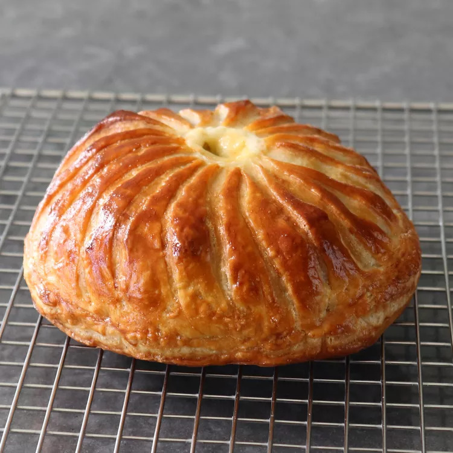

Cheese Burger

Description
This gorgeous, budget-friendly version of Beef Wellington is sure to
impress your guests, both visually and flavor-wise. Just please don't tell
them how easy it was, since we chefs like it when people think these kinds
of things are complex, and require a high level of skill. In fact, this
might be easier than making an actual bacon cheeseburger. Which reminds
me…this isn't as good as an actual bacon cheeseburger.
I know that seems like a strange thing to write in a post hyping
Cheeseburger Wellington, but it's true. One reason I hesitated filming
classic beef Wellington for so long, was my contention that there are so
many better ways to enjoy beef tenderloin, but that not what a preparation
like this is about. It's about putting on a show. And while a proper bacon
cheeseburger is an amazing thing to eat, it's not a show.
Ingredients
-
6 ounces frozen puff pastry
-
1 slice bacon, cut in half
-
8 ounces ground beef
-
salt and freshly ground black pepper to taste
-
cayenne pepper to taste
-
½ ounce sharp Cheddar cheese
-
1 large egg
Steps
-
Place bacon in a large cold skillet and cook over medium-high heat, turning occasionally, until evenly browned, about 10 minutes. Drain bacon slices on paper towels. Drain bacon fat and wipe the pan, but do not clean completely.
-
Shape ground beef into a patty that is about 1 inch thick by 4 1/4 inches in diameter. Season well with salt, pepper, and cayenne. Sear seasoned burger on high in the skillet for 2 minutes per side. Move the burger to a plate and transfer into a refrigerator to cool.
-
Remove a sheet of puff pastry from the freezer (I used 1/2 package of Dufour Puff Pastry). Roll the pastry to 1/8 inch thick. Cut out a 5 1/4 to 5 1/2 inch round circle of dough for the bottom. Cut out a 7 1/4 to 7 1/2-inch round circle of dough for the top. Place the dough on a sheet pan, and put in the freezer until firm.
-
Cut a small hole into the middle of the top piece (to function as a vent), and lightly score the surface of the pastry with the tip of a knife, but do not cut all the way through. Place the top piece in the fridge to keep cold.
-
Take the bottom pastry on the pan from the freezer and top with burger, bacon, and cheese. Beat egg with 1 teaspoon water in a small bowl and brush the edges with the egg wash. Place the top pastry piece over the fillings. As dough warms and softens, press the top edges into the bottom piece edges and seal tightly. The bottom edge of dough can be rolled up and over top of the pastry to finish the seal. Place in the fridge until well chilled, about 20 minutes.
-
Preheat the oven to 450 degrees F (230 degrees C).
-
Crimp the edge of the pastry with a fork, and egg wash the top surface.
-
Bake in the preheated oven until nicely browned, 20 to 22 minutes. Transfer to a cooling rack and allow to sit for about 5 minutes before serving.